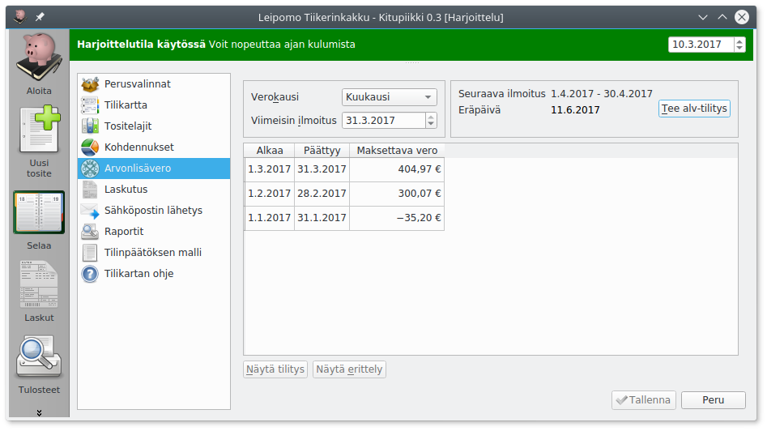
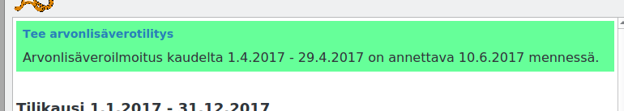

Arvonlisävero¶
Arvonlisäverovelvollisuus
Arvonlisäverovelvolliseksi on hakeuduttava, jos tilikauden liikevaihto voi ylittää 10 000 euroa. Alarajahuojennuksen takia hakeutuminen kannattaa yleensä pienemmälläkin liikevaihdolla. Yleishyödyllinen toiminta on arvonlisäverotonta, eli useimpien yhdistysten tarvitsee maksaa arvonlisäveroa vain, jos ne harjoittavat huomattavaa liiketoimintaa.
Määritykset¶
Kirjanpitovelvollinen määritellään arvonlisäverovelvolliseksi Perusvalinnoista. Jos yritys ei ole alv-velvollinen, ei arvonlisäveroon liittyviä valintoja näytetä kirjauksissa eikä määrityksissä.

Verokausi on pääasiallisesti kuukausi. Verohallinnon ohje selvittää, milloin ja miten yritys voi hakeutus neljännesvuoden tai vuoden verokauteen.
Viimeisin ilmoitus-kohtaan merkitään se päivämäärä, johon asti arvonlisäveroilmoitukset on annettu.
Tällä sivulla voit myös tehdä uuden alv-tilityksen (Tee alv-tilitys) tai tarkastella jo tehtyjä tilityksiä (Näytä tilitys ja Näytä erittely)
Arvonlisäverolajit¶
Kitupiikki käsittelee arvonlisäveroa ohjaustietojen avulla, eli samalle kirjanpitotilille voi kirjata erilaisen alv-kohtelun kirjauksia. Kirjaamisen helpottamiseksi voit toki luoda eri kirjanpitotilit esimerkiksi elintarvikkeiden myynnille (alv 14%) ja muulle myynnille.
Kitupiikissä on seuraavat alv-kirjaustyypit
| Tunnus | Nimi | Selitys |
|---|---|---|
| Veroton | Myynnistä ei makseta veroa / menosta ei tehdä alv-vähennystä. Tämä merkitään myös kaikille niille menotileille, jotka eivät ole alv-vähennyskelpoisia. | |
| Verollinen myynti/osto (netto) | Verollinen kotimaan myynti/osto. Heti kirjauksen yhteydessä myynti- tai ostotilille kirjataan veroton määrä, ja alv-veron tai vähennyksen osuus kirjataan alv-velkojen tai -saatavien tilille. | |
 |
Verollinen myynti/osto (brutto) | Verollinen bruttosumma kirjataan tilille, ja vero erotetaan tililtä alv-velkatilille vasta arvonlisäveroilmoitusta laadittaessa. |
 |
Verollinen myynti/osto (maksuperusteinen alv) | Arvonlisävero tilitetään vasta, kun maksu on suoritettu. |
 |
Nollaverokannan alainen myynti | Erikseen määritellyt tilanteet, joissa myynnistä ei suorita veroa, mutta hankinnoista saa vähentää arvonlisäveron. |
 |
Tavaroiden ja palveluiden yhteisömyynti | Verohallinnon ohje. Kirjauksen voi tehdä Kirjausapurilla. |
 |
Tavaroiden maahantuonti EU:n ulkopuolelta | Maahantuonnin arvonlisävero ilmoitetaan kausiveroilmoituksessa. Myyntilaskun yhteydessä kirjauksen voi tehdä Kirjausapurilla. |
 |
Rakennuspalveluiden myynti tai osto | Rakennuspalveluiden arvonlisäveron suorittaa ostaja käänteisen verovelvollisuuden mukaisesti. Kirjauksen voi tehdä Kirjausapurilla ja Kitupiikillä voi myös laatia laskun (mainittava ostajan Y-tunnus tai VAT-tunnus). |
Verolliset kirjaukset¶
Arvonlisäverolliset kirjaukset on helpointa tehdä Kirjausapurilla, joka jakaa myös nettokirjaukset tulos- ja alv-tileille. Myös laskutuksessa alv-kirjautuu automaattisesti valinnan mukaan.
Ilman avustajaa kirjattaessa verolaji ja -prosentti on valittava erikseen.

- Veronalainen määrä tarkoittaa arvonlisäveron perustetta. Bruttokirjauksessa summa kirjataan alv-tiedolla Verollinen myynti(brutto) ja veronalainen määrä. Nettokirjauksessa tähän kirjataan veroton (netto)summa.
- Veron määrä tarkoittaa maksettavaa arvonlisäveroa: nettokirjauksessa tähän kirjataan maksettava vero eli brutto- ja nettosummien erotus.
- Vähennettävä määrä tarkoittaa ostojen kirjauksessa arvonlisäverosta vähennettävää määrää.
- Kohdentamaton maksuperusteinen alv tarkoittaa maksua odottavaa veroa
Koodit kohdalleen
Arvonlisäveron käsittely perustuu kirjauksiin liittyviin ohjaustietoihin. Väärät alv-koodit johtavat virheelliseen alv-ilmoitukseen. Jotta ohjaustiedot tulevat oikein, on verolliset kirjaukset suositeltavaa tehdä Kirjausapurilla aina kuin se vain on mahdollista!
Arvonlisäverolaskelma¶

Kitupiikki muistuttaa aloitusikkunassa, kun arvonlisäveroilmoituksen eräpäivä lähestyy
Kun kaikki tälle ilmoituskaudelle tehdyt verolliset kirjaukset on tehty, paina Arvonlisävero-sivulla Tee alv-tilitys-nappia.

Kitupiikki esittää Alv-laskelman, jossa on kausiveroilmoituksessa arvolisäveron osalta tarvittavat tiedot. Vahvista laskelma painamalla OK.
Laskelman pohjalta tehdään kirjaus, jossa alv-velka ja alv-saatava yhdistetään ja kirjataan Verovelat-tilille. Samalle tilille tulee kirjata myös muut oma-aloitteisesti maksettavat verot, kuten ennakonpidätys ja työnantajamaksut.
Verovelat-tili
Verovelat-tilille kirjataan kaikki oma-aloitteiset verot, jotka on ilmoitettu verottajalle mutta ei vielä maksettu. Näin Verovelat-tilin saldon pitäisi aina vastata OmaVeron maksamattomien verojen saldoa. Vastaavasti kaikki verojen suoritukset ja verohallinnon tilittämät alv-palautukset kirjataan Verovelat-tilille.
Erittely, jossa kirjauksia voi seurata aina tositteisiin saakka, avautuu alv-sivun Näytä erittely-napista. Se tallentuu myös liitteeksi alv-tilitysvientiin ja siten myös sähköiseen arkistoon.

Arvonlisäverolaskelma kesken kauden
Tulosteet-välilehdeltä voit tulostaa Alv-erittelyn haluamaltasi aikaväliltä.
Maksuperusteinen arvonlisävero¶
Pienyritykset (liikevaihto alle 500 000 euroa vuodessa) voivat tilittää ostojen ja myyntien arvonlisäverot maksuperusteisesti. Kitupiikillä tämä on mahdollista myös niin, että kirjanpito pidetään suoriteperusteisena.

Kun yritys saa ostolaskun, kirjataan arvonlisäveron osuus tilille Maksuperusteinen alv-velka. Kun arvonlisäverosta saadaan maksu, siirretään veron osuus tilille Arvonlisäverovelka ja vasta nyt vero tulee näkyviin alv-tilitykseen.
Vastaavalla tavalla ostolaskun veron osuus kirjataan ensin tilille Maksuperusteinen alv-saaminen ja vasta kun lasku on maksettu, se siirtyy tilille Arvonlisäverosaatavat.
Arvonlisävero on kuitenkin maksettava viimeistään vuoden kuluttua suoritepäivästä.
Kun verolajina on maksuperusteinen arvonlisävero, käsittelee Kitupiikki sen automaattisesti laskutuksessa, Kirjausapurissa sekä tuoduissa myyntilaskuissa ja tilitapahtumiin perustuvissa maksukirjauksissa. Käsittely perustuu ohjaustietoihin ja alv-koodeihin.
Maksuperusteinen arvonlisävero otetaan käyttöön Arvonlisäveron määrityksistä Maksuperusteinen alv-rivillä olevasta rataspainikkeesta, josta aukeaa valintaikkuna:

Maksuperusteinen arvonlisäverotus alkaa-ruutuun kirjataan sen verokauden ensimmäinen päivä, jonka arvonlisävero tilitetään maksuperusteisena.
Jos maksuperusteisesta arvonlisäverotuksesta siirrytään takaisin suoriteperusteiseen, merkitään Suoriteperusteiseen arvonlisäveroon palataan-ruutuun sen verokauden ensimmäinen päivä, jolloin arvonlisävero tilitetään normaalilla tavalla. Tässä alv-tilityksessä maksetaan myös kaikki vielä maksamatta oleva maksuperusteinen arvonlisävero.
Tutustu huolella verohallinnon ohjeisiin
Ennen maksuperusteiseen arvonlisäverotukseen siirtymistä tutustu huolella verohallinnon ohjeisiin. Huomaa, että myös alv-vähennykset tilitetään maksuperusteisesti (myös osamaksua käytettäessä).